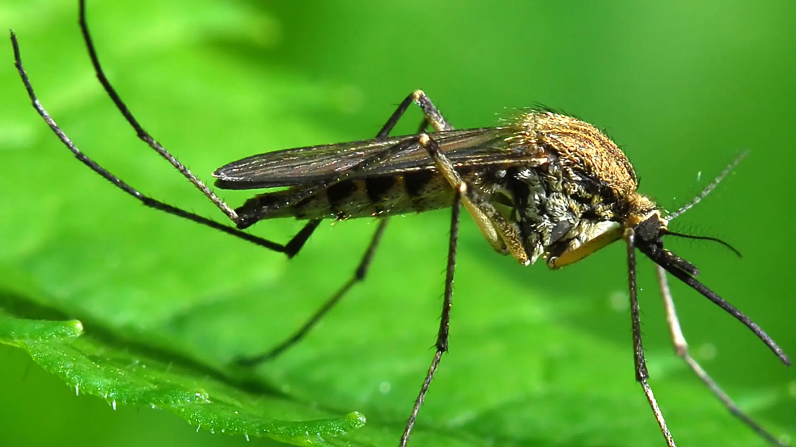
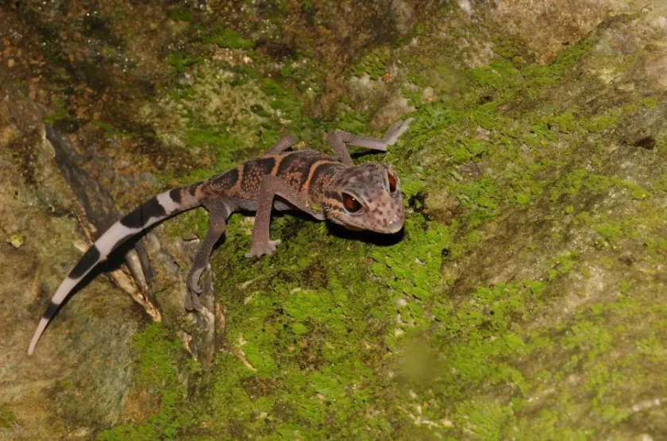

Impact On The Envoirnment
Why We Should Care
Impact On Surrounding Species
Geckos play an important ecological role in many of the environments they inhabit. As insectivores, they help control populations of insects like mosquitoes, beetles, and moths, making them natural pest regulators in both wild and urban settings. This insect control contributes to the balance of local ecosystems and can even benefit agricultural areas by reducing the need for chemical pesticides. Geckos also serve as prey for a variety of animals, including birds, snakes, and mammals, forming a crucial link in the food chain and supporting overall biodiversity.
Impact On Us
In addition to their ecological functions, geckos contribute to the health of their environments by acting as bioindicators. Because they are sensitive to pollution and habitat changes, a decline in gecko populations can signal environmental problems such as habitat destruction or chemical contamination. Their presence and well-being often reflect the overall quality of their habitat, which can inform conservation efforts. As humans continue to alter landscapes, preserving gecko habitats is not only important for the species themselves but also for maintaining healthy, balanced ecosystems.
How We Impact Them
Geckos are significantly impacted by human activities, primarily through habitat loss, pollution, and the introduction of invasive species. As forests are cleared for agriculture, urban development, and infrastructure, geckos lose the natural environments they rely on for shelter, hunting, and reproduction. Pesticide use can also harm geckos directly or reduce their food sources by killing off insects. Invasive predators such as cats and rats, often introduced by humans, pose an additional threat by preying on native gecko populations. Even in urban areas where some geckos adapt to living alongside humans, artificial lighting and noise can disrupt their natural behaviors. As a result, many gecko species face population declines, and some are at risk of extinction if conservation efforts are not implemented.